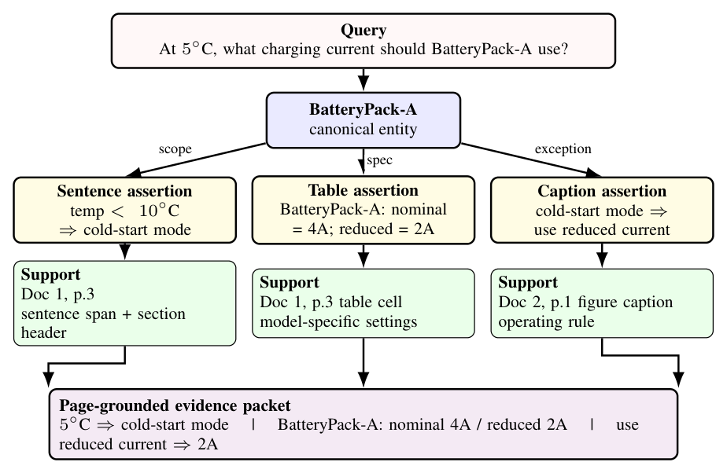
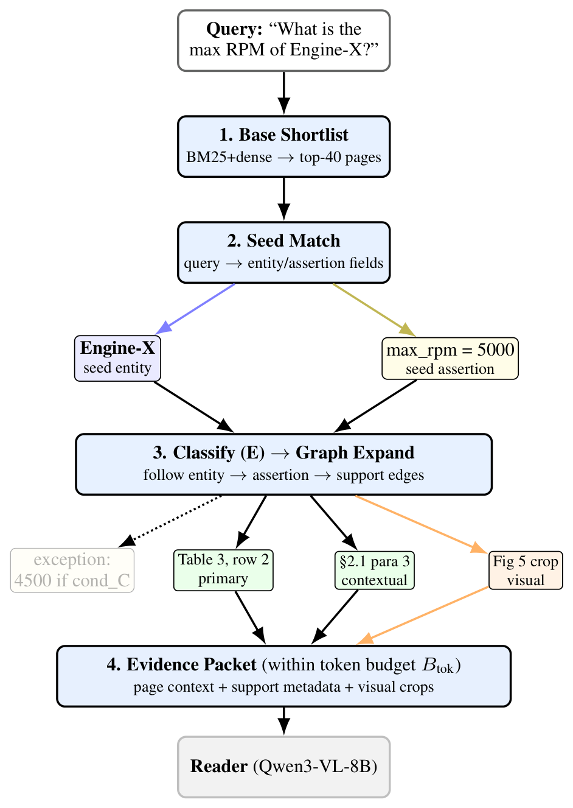

Publications / Top Conferences
PILAR: A Page-Grounded Unified Evidence Representation via an Entity-Linked Assertion Graph for Open-Domain QA Agents over Multimodal Document Corpora

Abstract
Open-domain question answering (ODQA) over multimodal document corpora requires linking evidence scattered across text, tables, and figures. Existing systems often store these sources separately or retrieve only coarse pages, which weakens global evidence linking. We present PILAR, a page-grounded unified evidence representation instantiated as an entity-linked assertion graph. PILAR maps sentence-, table-, and figure-derived facts into a common assertion space and uses the graph as a controlled linking layer over robust page retrieval. In a shared-reader evaluation with four agent frameworks, fourteen retrieval backends, and two benchmarks, PILAR achieves the best end-to-end EM/ANLS. Gains are largest on compositional, cross-document, and multimodal questions, with a single-shot improvement of +1.6 EM over flat retrieval, rising to +2.9 on compositional and +5.9 on 3-hop questions. Ablations show that current gains are driven mainly by the text-instantiated slice of the framework, while visual assertions help only after locality-aware filtering. We therefore position PILAR as a unified evidence representation for multimodal ODQA rather than a standalone visual-reasoning module.
Key Contribution
Entity-linked assertion graphs unify text, tables, and figures into a single page-grounded evidence representation for open-domain multimodal QA agents.
Method
PILAR converts sentence-, table-, and figure-derived evidence into one subject-predicate-object assertion space. Text blocks are converted into assertions directly; tables, charts, and figures are processed by a VLM over cropped regions together with OCR and caption text, and the resulting assertions are kept only if they are grounded in the corresponding crop. The corpus is then organized into four connected layers:
- Entity layer: canonical entities and cross-document aliases.
- Assertion layer: normalized claims in subject-predicate-object form.
- Support layer: the text spans, table regions, figure crops, and captions that justify each claim.
- Provenance layer: document ID, page number, section path, and bounding box of each support.
The entity and assertion layers provide global evidence linking across documents and modalities, while the support and provenance layers preserve the page context needed to verify each claim. At query time, a hybrid BM25 and dense page retriever produces a shortlist, and the graph acts as a controlled linking layer on top of it: it follows local continuity, canonical aliases, and entity-assertion-support links, and a relevance gate suppresses weak expansions. The result is returned to the agent as a single page-grounded evidence packet, so the same backend serves single-shot prompting, iterative query reformulation, and planner-executor agents.


Results
All text-based and graph backends share the same BM25 and dense page retriever and the same reader (Qwen3-VL-8B); page-based multimodal methods keep their native retrieval and packing pipeline under the same reader and evaluation protocol. Each cell shows EM / ANLS.
| Backend | M3DocVQA (EM / ANLS) | Frames (EM / ANLS) | ||||||
|---|---|---|---|---|---|---|---|---|
| Naive RAG | ReAct | PlanRAG | AutoGen | Naive RAG | ReAct | PlanRAG | AutoGen | |
| Text chunk-based RAG | ||||||||
| Flat chunk | 32.0 / 34.4 | 31.4 / 34.1 | 27.4 / 29.5 | 31.8 / 34.5 | 13.8 / 16.7 | 11.6 / 14.5 | 9.1 / 11.2 | 13.4 / 16.6 |
| LumberChunker | 31.2 / 33.6 | 30.0 / 32.6 | 26.4 / 28.2 | 31.0 / 33.4 | 13.2 / 16.1 | 11.4 / 13.8 | 9.0 / 11.2 | 13.0 / 15.8 |
| Meta Chunker | 31.0 / 33.4 | 29.8 / 32.4 | 26.4 / 28.0 | 31.0 / 33.4 | 13.0 / 15.9 | 11.2 / 13.6 | 8.8 / 11.0 | 12.8 / 15.6 |
| Structural chunking | 30.4 / 32.8 | 29.2 / 31.8 | 25.8 / 27.6 | 30.2 / 32.6 | 12.6 / 15.4 | 10.8 / 13.4 | 8.6 / 10.8 | 12.4 / 15.0 |
| Hierarchical / structure-aware retrieval | ||||||||
| RAPTOR | 31.4 / 33.8 | 30.2 / 32.8 | 26.6 / 28.4 | 31.2 / 33.6 | 13.0 / 15.9 | 11.2 / 13.8 | 8.8 / 11.0 | 12.8 / 15.6 |
| MultiDocFusion | 31.4 / 33.9 | 30.0 / 32.6 | 27.2 / 29.1 | 32.0 / 33.7 | 12.2 / 15.6 | 10.8 / 13.3 | 8.3 / 11.0 | 11.6 / 14.3 |
| Graph-augmented chunk retrieval | ||||||||
| HopRAG | 31.6 / 34.0 | 30.4 / 33.0 | 26.8 / 28.6 | 31.4 / 33.8 | 13.2 / 16.1 | 11.4 / 14.0 | 9.0 / 11.2 | 13.0 / 15.8 |
| Entity-KG GraphRAG | ||||||||
| MS GraphRAG | 32.2 / 34.6 | 29.8 / 32.5 | 26.6 / 28.6 | 31.2 / 34.0 | 13.6 / 16.3 | 11.2 / 13.8 | 9.3 / 11.1 | 13.0 / 16.0 |
| LightRAG | 31.6 / 34.2 | 31.0 / 33.5 | 26.4 / 28.5 | 31.6 / 34.3 | 12.6 / 15.5 | 11.4 / 13.9 | 9.1 / 11.4 | 13.6 / 16.0 |
| Page-level multimodal RAG | ||||||||
| M3DocRAG | 19.0 / 25.2 | 16.0 / 16.6 | 10.0 / 12.7 | 19.0 / 25.2 | 12.0 / 16.5 | 4.0 / 5.3 | 1.0 / 3.2 | 11.0 / 15.2 |
| VDocRAG | 20.4 / 26.6 | 17.2 / 17.6 | 10.8 / 13.4 | 20.4 / 26.6 | 12.4 / 17.1 | 4.2 / 5.4 | 1.0 / 3.4 | 11.4 / 15.6 |
| VLM-augmented page retrieval | ||||||||
| SimpleDoc | 24.0 / 28.7 | 29.0 / 33.2 | 20.0 / 22.9 | 24.0 / 29.6 | 13.0 / 19.5 | 7.0 / 14.0 | 6.0 / 10.7 | 11.0 / 18.0 |
| Multimodal GraphRAG | ||||||||
| MoLoRAG | 19.4 / 25.6 | 16.4 / 17.0 | 10.4 / 13.0 | 19.4 / 25.6 | 12.2 / 16.8 | 4.2 / 5.5 | 1.2 / 3.4 | 11.2 / 15.4 |
| Page-grounded unified evidence representation (ours) | ||||||||
| PILAR | 33.6 / 36.3 | 31.4 / 34.5 | 28.0 / 29.8 | 32.6 / 35.3 | 15.0 / 17.9 | 12.4 / 15.2 | 10.5 / 12.5 | 14.5 / 17.5 |
Main comparison: fourteen backends across four agent frameworks on M3DocVQA and Frames.
- PILAR yields the strongest overall profile, with the clearest gains on M3DocVQA. The Naive RAG gain on M3DocVQA is significant (p = 0.048, paired approximate randomization), and pooling across agents remains significant (p = 0.019).
- Against the strongest competitor in each subset (Naive RAG, M3DocVQA), PILAR improves compositional (+2.9 EM), two-document (+2.2), and multimodal (+1.4) questions, where support must be linked across pages or documents.
- In the strict matched-interface ablation below, the text-only slice of PILAR provides the largest single gain (+1.2 EM over page-only retrieval). Visual assertions hurt in isolation but recover +0.4 EM once locality-aware filtering is added.
| Variant | Local | Text slice | Visual | Gate | EM | ANLS | ROUGE-L |
|---|---|---|---|---|---|---|---|
| Page-level baselines | |||||||
| Page-only retrieval | ✗ | ✗ | ✗ | ✗ | 32.0 | 34.4 | 37.3 |
| Page-only + local prior | ✓ | ✗ | ✗ | ✗ | 32.4 | 35.6 | 38.6 |
| + PILAR text-only slice | |||||||
| PILAR (text-only slice) | ✗ | ✓ | ✗ | ✗ | 33.2 | 36.1 | 38.9 |
| PILAR (text-only) + local | ✓ | ✓ | ✗ | ✗ | 33.0 | 36.1 | 39.0 |
| + Visual assertions | |||||||
| PILAR (text+visual slice) | ✗ | ✓ | ✓ | ✗ | 32.8 | 35.6 | 38.2 |
| PILAR (text+visual) + local | ✓ | ✓ | ✓ | ✗ | 33.4 | 36.1 | 38.9 |
| Final (+ gate) | ✓ | ✓ | ✓ | ✓ | 33.6 | 36.3 | 39.1 |
Strict matched-interface ablation (Naive RAG, M3DocVQA). All rows share the same reader, prompt, packet budget, and evaluation split.
BibTeX
@inproceedings{shin2026pilar,
title = {{PILAR}: A Page-Grounded Unified Evidence Representation via an Entity-Linked Assertion Graph for Open-Domain {QA} Agents over Multimodal Document Corpora},
author = {Shin, Joongmin and Shim, Gyuho and Lee, Jung-hun and Seo, Jaehyung},
booktitle = {Findings of the Association for Computational Linguistics: EMNLP 2026},
year = {2026},
eprint = {2609.32895},
archivePrefix = {arXiv}
}